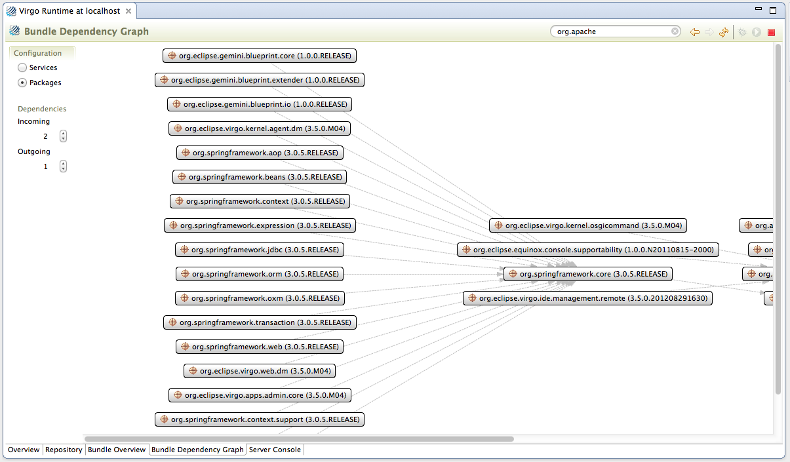

The "Bundle Dependency Graph" tab takes you to a page where you can visualize the complex relationships between bundles.

You can view package or services relationships by selecting the relevant radio button in the "Configuration" section. The "Incoming" and "Outgoing" controls define how many levels of dependencies are shown. For example, if you select a value of 2 for Incoming, the graph will who items that the selected bundle(s) are dependent on as well as the bundles that those bundles are then dependent on.
Use the search text area in the editor header to select the source bundles for the graph. Wild cards are supported. Click the refresh button to update the bundle graph.